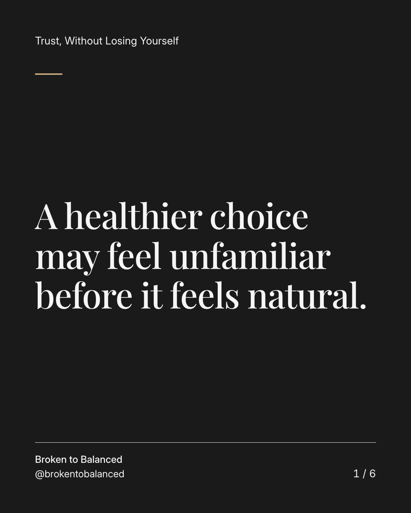
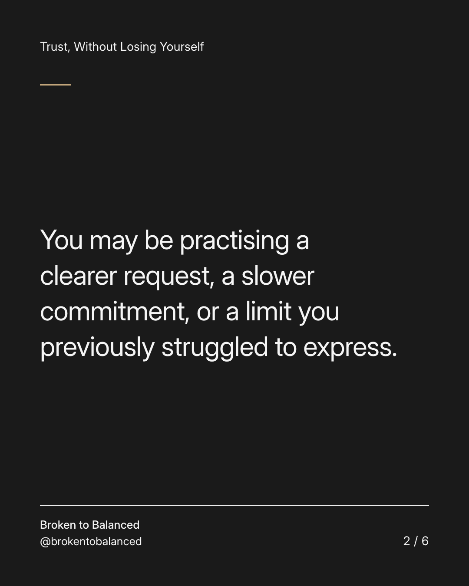
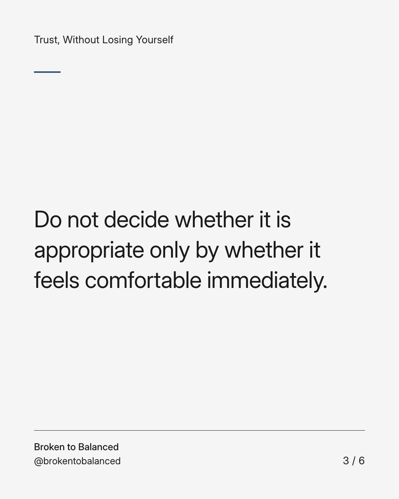
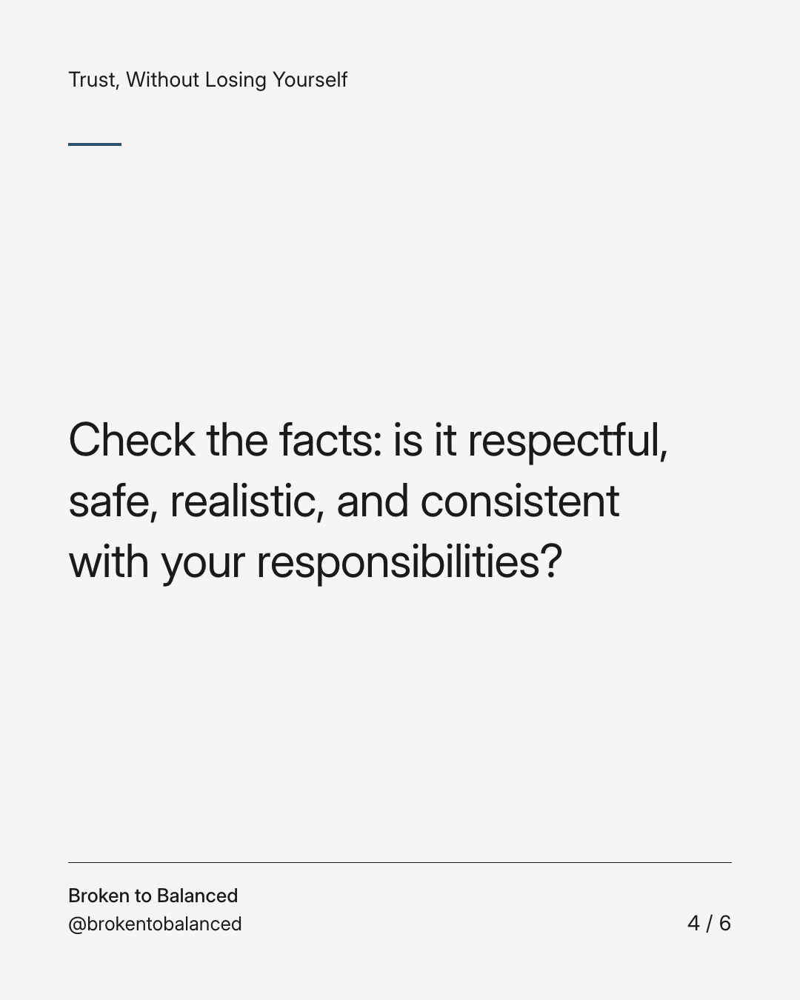
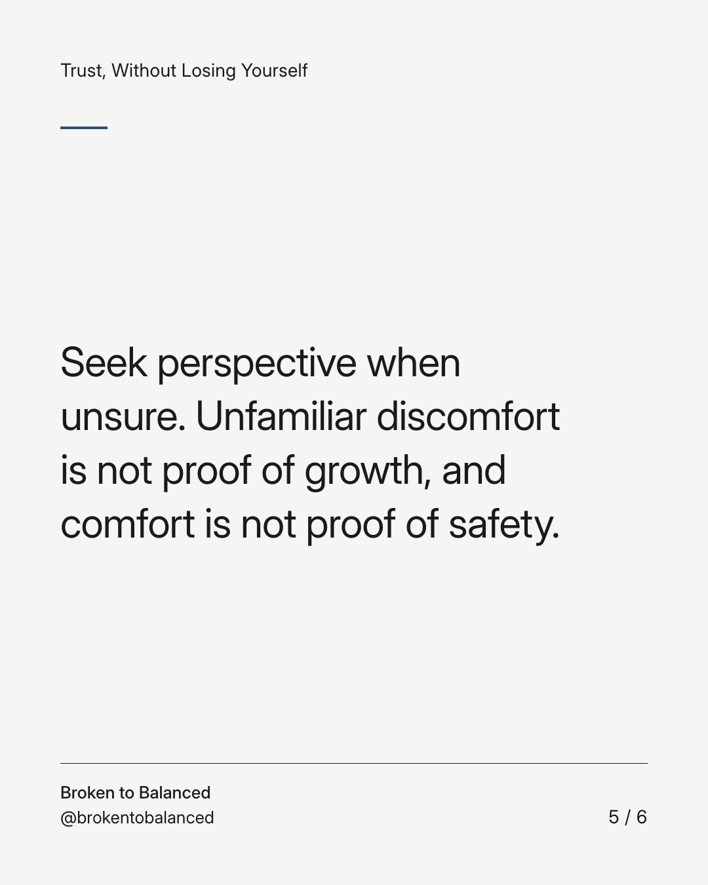
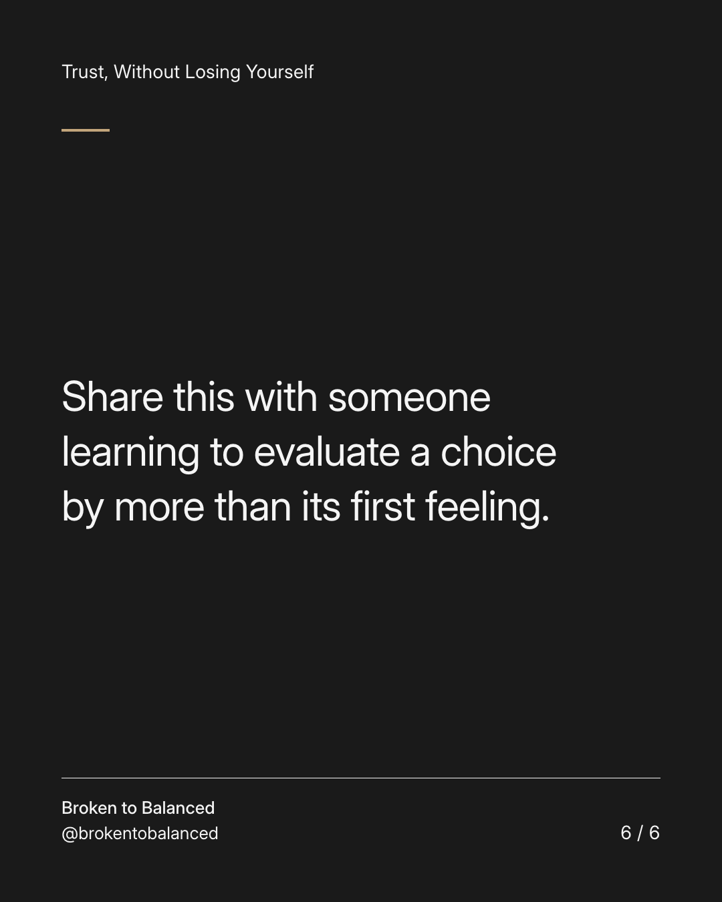

Exact text and accessibility text
A healthier choice may feel unfamiliar before it feels natural.
Slide 1 of 6. A healthier choice may feel unfamiliar before it feels natural.


Exact text and accessibility text
You may be practising a clearer request, a slower commitment, or a limit you previously struggled to express.
Slide 2 of 6. You may be practising a clearer request, a slower commitment, or a limit you previously struggled to express.


Exact text and accessibility text
Do not decide whether it is appropriate only by whether it feels comfortable immediately.
Slide 3 of 6. Do not decide whether it is appropriate only by whether it feels comfortable immediately.


Exact text and accessibility text
Check the facts: is it respectful, safe, realistic, and consistent with your responsibilities?
Slide 4 of 6. Check the facts: is it respectful, safe, realistic, and consistent with your responsibilities?


Exact text and accessibility text
Seek perspective when unsure. Unfamiliar discomfort is not proof of growth, and comfort is not proof of safety.
Slide 5 of 6. Seek perspective when unsure. Unfamiliar discomfort is not proof of growth, and comfort is not proof of safety.


Exact text and accessibility text
Share this with someone learning to evaluate a choice by more than its first feeling.
Slide 6 of 6. Share this with someone learning to evaluate a choice by more than its first feeling.
Exact caption
Plain-text fallback: select and copy the caption.